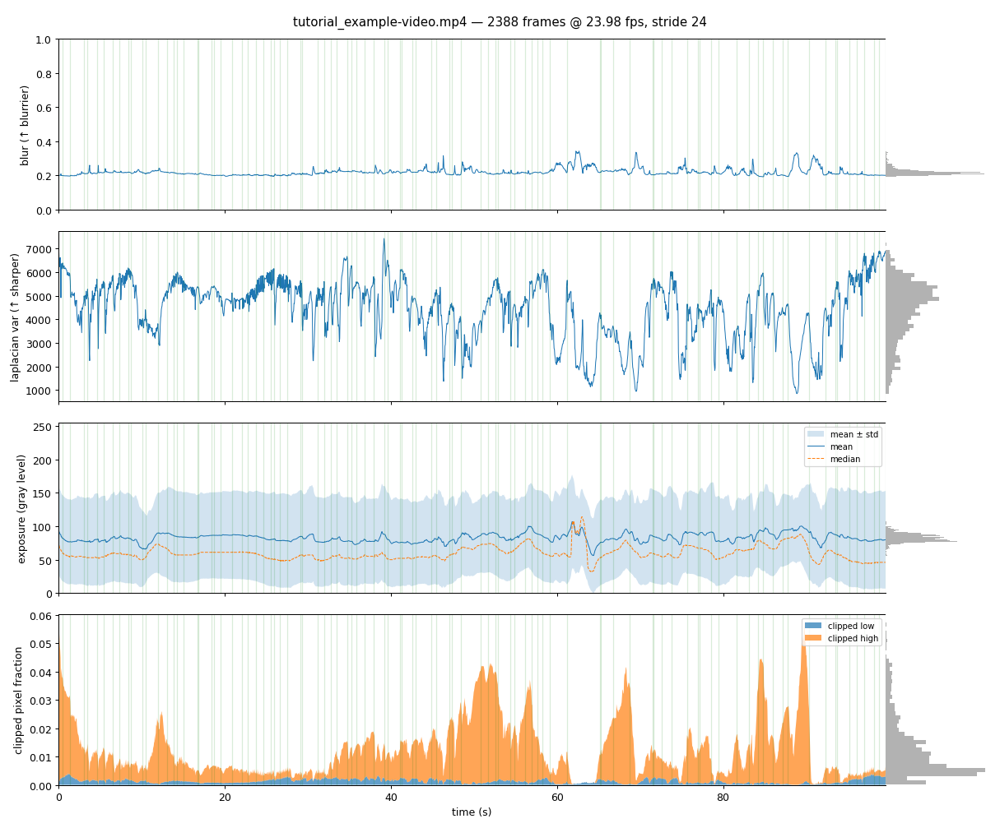
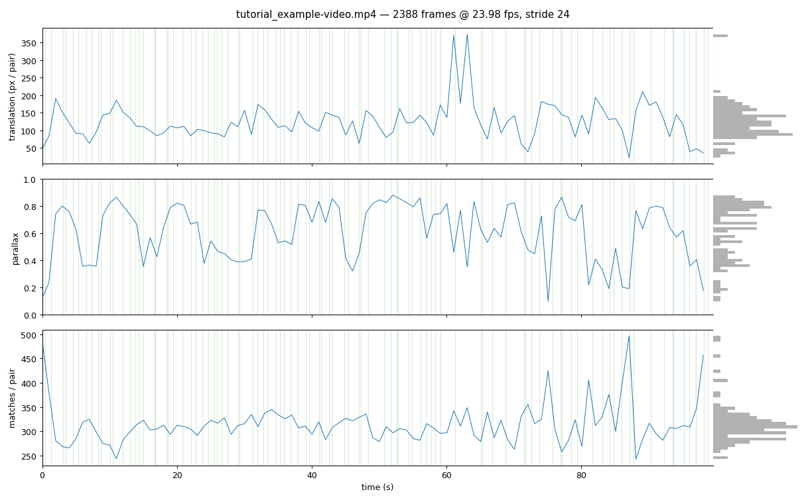
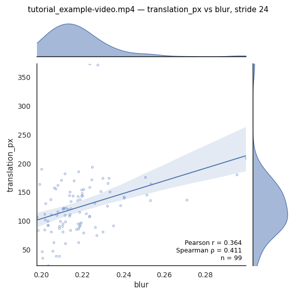
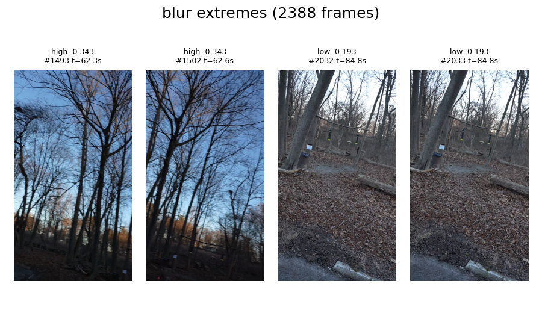
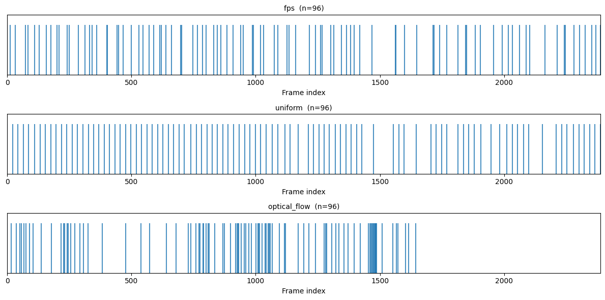
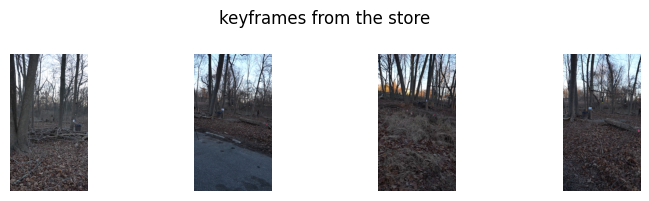

Preprocessing#
The preproc stage turns a video into keyframes. It measures every frame, keeps the good ones, picks a subset of them and saves it as a folder of PNGs that every later stage reads.
[1]:
from IPython.display import Image, display
from collab_splats.preproc.frames import frame_idx_from_path, frame_paths, read_frames
from collab_splats.preproc.qa import load_video_quality
from collab_splats.preproc.sampling import (
filter_frame_quality,
sample_fps,
sample_optical_flow,
sample_uniform,
)
from collab_splats.preproc.viz import (
plot_correlation,
plot_frame_extremes,
plot_frame_grid,
plot_motion,
plot_photometric,
plot_selection,
)
%run ../tutorial.py
scene = tutorial_scene("preproc")
fps=2.000 wanted 199 frames, outside [min_frames=None, max_frames=96]; re-spread to 96 frames over the whole video (effective 0.964 fps)
1. Capture quality#
The stage first measures the clip and saves the numbers in a quality report. It does not judge frames yet. The measurements:
blur: how soft the frame looks, 0 to 1; higher is blurrier.laplacian: amount of fine detail; higher is sharper.clipped fraction: share of pixels that are pure black or pure white.translation: how far the image content moved between two frames, in pixels.parallax: how much the viewpoint changed between two frames, 0 to 1. Depth needs parallax.matches: features found in both frames. Few matches means a fast turn or a blank view.
Load the report the stage saved, and the frames it kept:
[2]:
report_path = scene.images_dir.parent / "video_quality_report.json"
report = load_video_quality(VIDEO_PATH, report_path)
# Source frame index of every kept keyframe
stored = frame_paths(scene.images_dir)
kept = [frame_idx_from_path(p) for p in stored]
# The plot functions write PNGs into this folder
plots_dir = work_dir("preprocessing")
Per-frame measurements over time; kept frames are marked:
[3]:
photometric_png = plot_photometric(report, plots_dir, selected=kept)
Image(filename=photometric_png)
[3]:

Kept frames should avoid blur peaks and clipped-pixel spikes.
Motion between neighboring frames:
[4]:
motion_png = plot_motion(report, plots_dir, selected=kept)
display(Image(filename=motion_png))

Stretches with few matches are where the camera turned fast or saw little texture.
Does fast motion cause blur? Blur of each pair’s first frame against that pair’s translation:
[5]:
correlation_png = plot_correlation(report, "blur", "translation_px", plots_dir)
display(Image(filename=correlation_png))

A positive slope means faster motion gives blurrier frames on this clip.
What the blur numbers look like: the two blurriest and the two sharpest frames.
[6]:
extremes_png = plot_frame_extremes(report, VIDEO_PATH, plots_dir, column="blur", n=2)
Image(filename=extremes_png)
[6]:

Use these to decide which blur values you would still accept.
2. Choosing keyframes#
filter_frame_quality decides which frames are good enough. It uses two thresholds:
sharpness_k: drops frames much less sharp than the rest of this clip. Larger keeps more.max_clipped_frac: drops frames with too many pure black or white pixels.
The thresholds work on the saved report, so changing them does not decode the video again.
[7]:
preproc_cfg = scene.config["preproc"]
max_frames = preproc_cfg["max_frames"]
# Default thresholds, as the stage used them
eligible = filter_frame_quality(report)
print(f"eligible: {eligible.sum()} / {eligible.size} frames")
eligible: 2041 / 2388 frames
Three samplers then pick keyframes from the eligible frames:
sample_fps(default): the sharpest frame in each1/fps-second slot, so spacing is fixed.sample_uniform: exactlymax_framesframes, evenly spaced.sample_optical_flow: a new frame each time the camera has moved enough. It stops atmax_frames, so a small budget may cover only the start of the clip.
Run all three with the stage’s settings and compare their picks:
[8]:
_, fps_records = sample_fps(
str(VIDEO_PATH),
fps=preproc_cfg["fps"],
report=report,
max_frames=max_frames,
workers=preproc_cfg["n_workers"],
)
_, uniform_records = sample_uniform(
str(VIDEO_PATH),
max_frames=max_frames,
report=report,
workers=preproc_cfg["n_workers"],
)
_, flow_records = sample_optical_flow(
str(VIDEO_PATH),
report=report,
max_frames=max_frames,
)
# One line per picked frame, one row per sampler
selections = {
"fps": [r["frame_idx"] for r in fps_records],
"uniform": [r["frame_idx"] for r in uniform_records],
"optical_flow": [r["frame_idx"] for r in flow_records],
}
plot_selection(eligible.size, selections)
fps=2.000 wanted 199 frames, outside [min_frames=None, max_frames=96]; re-spread to 96 frames over the whole video (effective 0.964 fps)

Each tick is one picked frame. Good picks spread over the whole clip.
3. The keyframe store#
The stage saved its picks as images/frame_NNNNNN.png, named by the frame’s index in the video. Four of them:
[9]:
print(f"{len(stored)} keyframes in {scene.images_dir}")
# Four keyframes spread across the store
step = len(kept) // 4
montage = read_frames(scene.images_dir, kept[::step][:4])
plot_frame_grid(montage, title="keyframes from the store", n_cols=4)
96 keyframes in /workspace/collab-splats/.worktrees/tutorial-rework/data/tutorial_scene/images

Neighboring keyframes should overlap, so the same surfaces appear in several frames.
4. Lens distortion#
Action-camera lenses bend straight lines. With preproc.undistort: true the stage estimates the lens and rewrites the keyframes as if taken by a distortion-free camera. It is off by default.
In a pipeline run#
The preproc stage does all of this in one call. The keys, with their configs/base.yaml defaults (this scene sets max_frames: 96):
preproc:
frame_selection: fps # fps | uniform | optical_flow
fps: 2.0 # fps only: samples per second
max_frames: 300 # count for uniform, ceiling otherwise
undistort: false # estimate the lens, then rewrite images/ undistorted
# quality: # optional; module defaults shown
# sharpness_k: 2.0 # how much less sharp than the clip a frame may be
# max_clipped_frac: 0.25 # ceiling on the clipped-pixel fraction